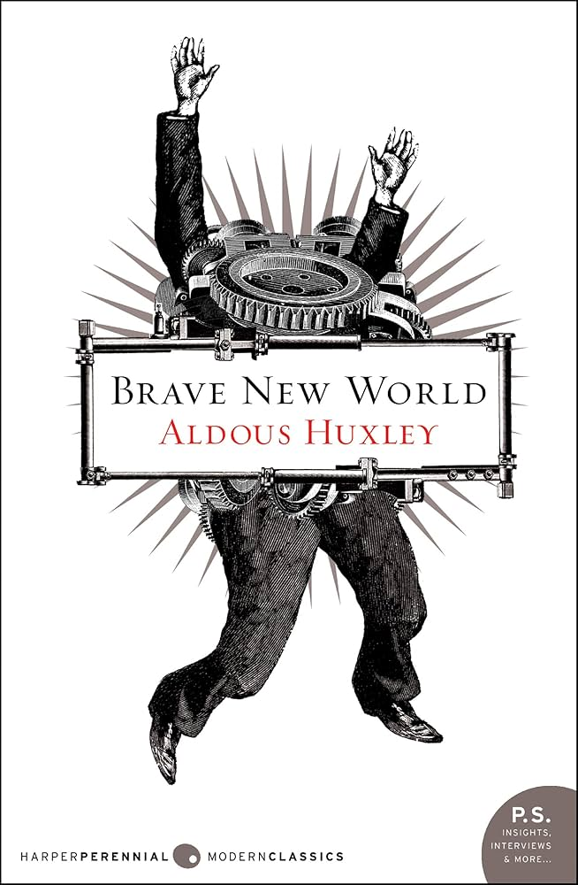

Carlos Jimenez Zepeda 
Student
Avenida siempre viva #43, Zapopan
"De nuevo bailo vals con la señorita Victoria"
--Edwin Espangler
Personal presentation
- I am an aspiring administrator, financier, and systems engineer with a keen interest in programming and mathematics. Thanks to these pursuits, my goal is to become an accomplished scientist.
My other interests include web programming, CRMs, digital marketing, and swimming.
I consider myself highly tenacious; I excelled in my high school class and currently maintain the highest grades in my entire faculty.
I am seeking new challenges in a company that will enable me to enhance my professional development and pursue an MS and a Ph.D. in computer science or data analytics.
Background
I'm from Guadalajara and I want be a billioner
Education
Skills
- Expert in Soulslike games (100%)
- C++ (40%)
- Python (60%)
- Professional hamburger eater (120%)
- Expert in anime (90%)
Hobbies
Favorite food
Top 5
- Mexican
- American
- Italian
- Japanese
- Indian
Bottom 3
- Chinese
- Korean
- Thai
Books, Movies & TV Shows
- Books
- 1994 - George Orwell

- Man's Search for Meaning - Victor Frankl

- Brave New World - Aldous Huxley 
- Movies
- Interestellar
- The pianist

- Shrek
- TV Shows
- Sherlock
- En familia con Chabelo
- My happy mariage
Family birthdays
Clasic table
| Name |
Last names |
Birthday |
| Diana Elizabeth |
Zepeda |
November 21 |
| Jesus |
Zepeda |
October 21 |
Modern Table
| Full names |
Birthday |
| Name |
Last names |
| Diana Elizabeth |
Zepeda |
November 21 |
| Jesus |
Zepeda |
October 21 |
Table of birthdays
Heroes
| Name |
Picture |
Date of birth |
Date of dead |
Profession |
Achievements |
| Sir Isaac Newton |
 |
January 4, 1643 |
March 31, 1727 |
Mathematician, Physicist, Astronomer, Author |
- Formulated the laws of motion and universal gravitation.
- Developed the field of classical mechanics.
- Made significant contributions to calculus.
- Published "Philosophiæ Naturalis Principia Mathematica" (Mathematical Principles of Natural Philosophy).
|
| Richard Phillips Feynman |
 |
May 11, 1918 |
February 15, 1988 |
Theoretical Physicist |
- Pioneered the field of quantum electrodynamics (QED).
- Developed the Feynman diagrams, which visualize the behavior of subatomic particles.
- Received the Nobel Prize in Physics in 1965.
- Played a significant role in the Manhattan Project.
- Contributed to the understanding of superfluidity and quantum computing.
|
| Syukuro Manabe |
|
September 21, 1931 |
Still alive |
Climatologist, Meteorologist |
- Pioneered the use of computer models to simulate climate change and global warming
- Developed one of the first models that coupled atmospheric dynamics and thermodynamics with radiation.
- Awarded the Nobel Prize in Physics in 2021 for his work on the physical modeling of Earth's climate.
|